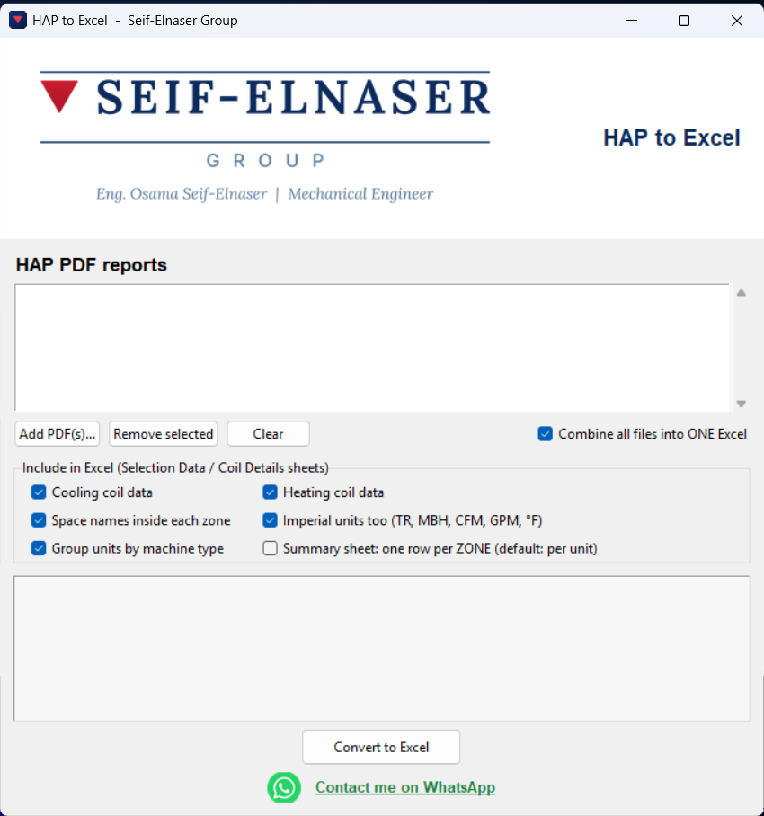

HAP to Excel
Windows desktop app
Copying area, airflow, total coil load and water flow from HAP into Excel, cell by cell, for every fan coil and AHU in a project takes hours.
Then one wrongly copied number can end up under the whole equipment selection from the catalog.
HAP to Excel removes the manual copying: choose the HAP PDF, press Convert, and get a ready Excel file.
- Reads HAP reports, versions 4.90 and 5.10.
- Works with FCU and AHU systems.
- Understands multi-zone systems, even with custom zone names.
- Handles DX units. When there is no water flow, it writes N/A instead of an error.
- Merges several files into one Excel workbook.
What the Excel file contains
- HAP Zone Summary: area, sensible load, airflow, coil load, ventilation and water flow, with TR, CFM and GPM calculated.
- Selection Data: units grouped by machine type (FCU, water AHU, DX, CRAC), with loads and flows totaled per unit in SI and IP, so you can open the catalog and select directly.
- Coil Details: each zone on its own, with the names of the spaces inside it and the cooling and heating coil data.
- Checks: if a unit is missing data (for example a coil page HAP did not print), it names the unit instead of giving you a wrong number.
You control what appears: cooling or heating loads, space names, imperial units and other options.
What used to be hours of manual copying is now one step, and copying errors are gone because nothing is copied by hand.
A real Excel file produced by the tool for a full floor of a project, with four sheets: Zone Summary, Selection Data, Coil Details and Checks. Download it to see the result before trying the tool.